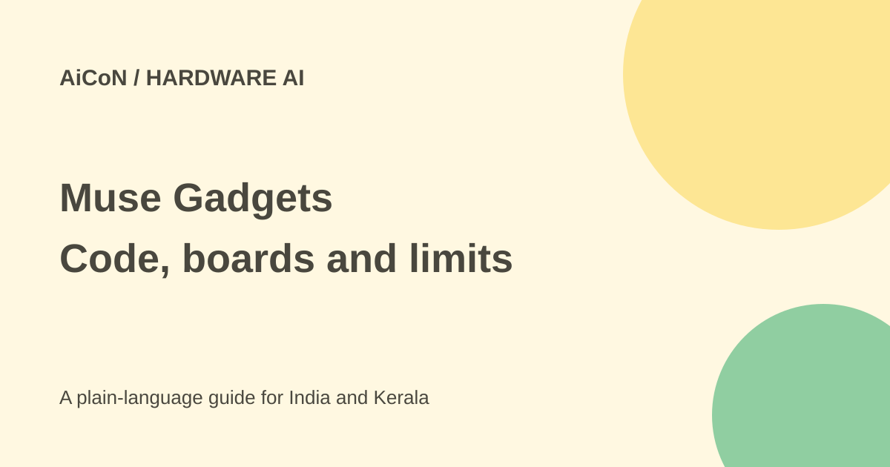

Muse Gadgets: ESP32 and Linux projects, India limits
Muse Gadgets lets hobbyists connect ESP32 boards, Raspberry Pi or Linux machines to Muse. The SDKs and firmware are Apache 2.0 software. Hardware, internet and the separate Muse product are not made free by that licence.

What can you build?
The official page describes displays, buttons, sensors, speakers and other devices. The ESP32 SDK connects supported boards to Muse. The Linux SDK can turn a Raspberry Pi or Linux box into a gadget and expose custom commands.
The page links its source to the facebookincubator Muse gadget repository. This is a tinkering project, not a plug-and-play promise for every board.
What Indian readers should know
The maker's Muse Home Link offer is US-only, one per active Muse subscriber, shipping in October on a first-come basis. It is not a free hardware offer for India.
We did not confirm Muse account access, an Indian subscription price or the availability of every SDK token route in India. Confirm those before buying a board. An open-source SDK does not mean its connected service is available worldwide.
How to plan a safe first project
- Read the official gadget page and the SDK README for your exact board or Linux system.
- Check Muse account and token access before spending on hardware.
- Choose a simple display or button demo, not a mains-powered appliance or door lock.
- Back up your board configuration and check the power supply and wiring instructions.
- Use the official SDK setup. Keep its token secret and out of public code or screenshots.
- Test with non-sensitive data and limit any custom command to the minimum it needs.
- Disconnect or revoke access after testing, and do not let an AI command make uncontrolled changes to important devices.
Free, paid and warranty
The device code is Apache 2.0 and provided as-is without warranty. You supply hardware and may need a Muse subscription or other services. Current Indian total costs were not confirmed.
The official page explicitly warns of bricked boards and voided warranties. Treat setup as a project where mistakes can damage hardware. Follow the device maker's electrical safety guidance and avoid work you are not qualified to do.
Privacy and home access
A microphone, camera or home-control connection can expose private household information. Tell other people before recording and do not share Wi-Fi secrets or tokens in community posts. Start with a spare board, not your main computer or a critical home system.
What changed since the original post?
The Apache licence and two SDK routes are confirmed. The US-only Home Link offer is kept separate from DIY software. No board was programmed and no India account access was tested.
Frequently asked questions
Can I get Home Link free in India?
The checked offer is for US subscribers only.
Does open source mean no cost?
No. Hardware and separate services can cost money.
Can I use any ESP32 board?
Read the current SDK requirements for your exact board; compatibility was not tested here.
Sources: Official Muse Gadgets page · Current device SDK repository · Actual Apache licence. Checked 7 October 2026.